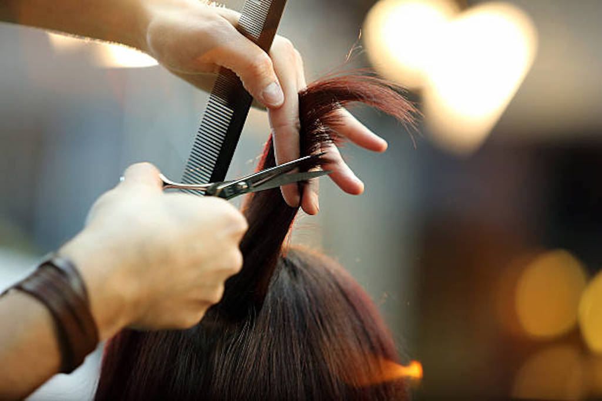
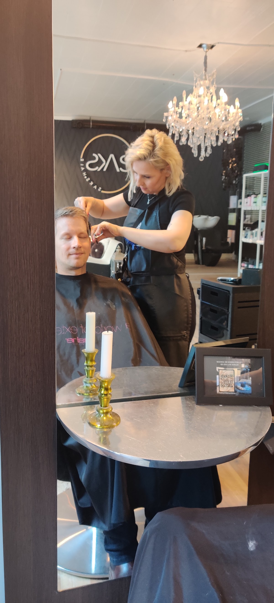
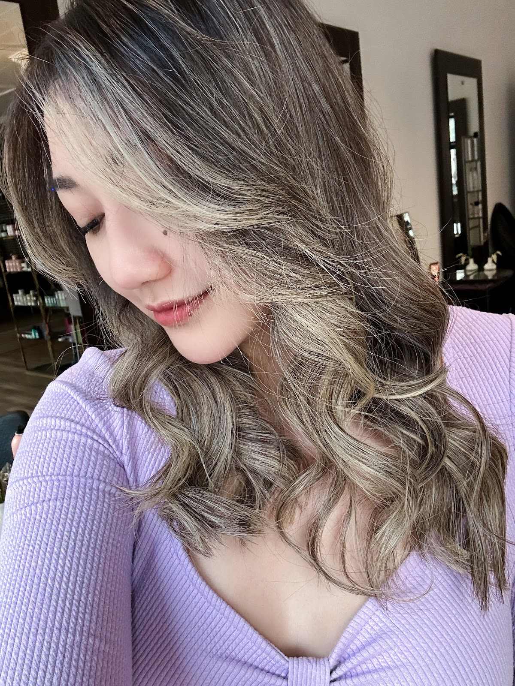
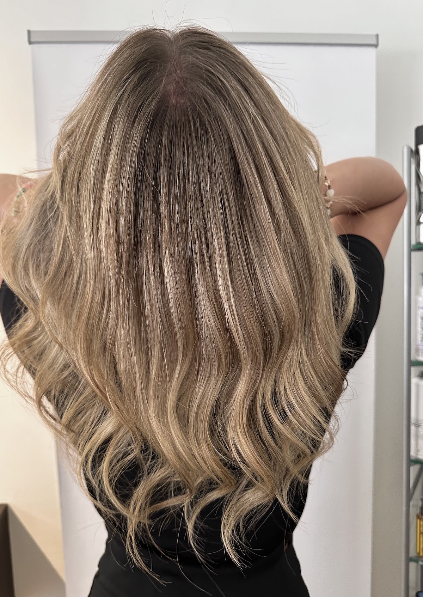

Salong Saks - Frisör Helsingborg
Boka tidBehandlingar & priser
Välj en behandling och boka tiden direkt här.
Omdömen
Vad kunderna säger
Great haircuts, friendly staff/owner! I've been going for years. Always happy with the results! Thank you Gül!
The ambiance is really nice, the service is very good and the price is very reasonable. Gul, the owner and hairstylist, saved my hair from the ridiculous mistake I did to my bangs. She really put a lot of effort to deliver the one I wished for.
Very friendly staff! They are very helpful and understanding of your requirements. Got a wonderful haircut done by Gul . She’s wonderful and talented and so are the rest of the stylists. Will be going back for a coloring soon !
Really nice experience, I was super satisfied with the result after a balayage and a cut. First time I actually get the result that I want! Gul has a really good energy, is efficient and really nice as well! I came from Copenhagen to have a haircut in Helsingborg and I don't regret it! Highly recommended.
Super hairsalon, have gone here 5 years now since I moved to Helsingborg. My hairdresser, Gul, is very proficient at her job, listens well and always delivers a good end result. This salon also cares about the future, lot of trainees and students here. Great atmosphere. I definitely recommend going here. 👌
4,8 av 5 från 176 omdömen på GoogleLäs alla på Google
Om oss
En salong i centrala Helsingborg
Klippning, färg, extensions och uppsättning på Södra Kyrkogatan. Vi börjar alltid med att lyssna på dig.
AdressSödra Kyrkogatan 16, Helsingborg
BokaOnline, dygnet runt

Salongen



Besök oss
Södra Kyrkogatan 16
Öppettider
- MåndagStängt
- Tisdag10:00–18:00
- Onsdag10:00–18:00
- Torsdag10:00–18:00
- Fredag10:00–18:00
- Lördag10:00–15:00
- SöndagStängt